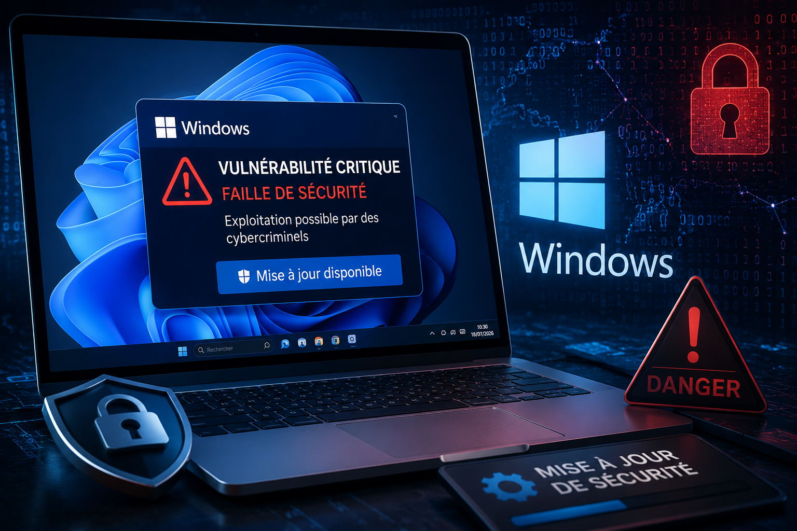

Windows : Microsoft corrige une faille de sécurité critique exploitée par des cybercriminels
par Babacar Dione de CyberShield • 19 juillet 2026 • 4 min de lecture

Une nouvelle alerte de cybersécurité concerne les utilisateurs de Windows. En effet, Microsoft a récemment publié un correctif de sécurité afin de combler une vulnérabilité critique susceptible d'être exploitée par des cybercriminels. Cette mise à jour intervient alors que plusieurs failles de ce type sont régulièrement ciblées par des attaquants cherchant à compromettre des ordinateurs partout dans le monde. Selon Microsoft, cette vulnérabilité pouvait permettre à un pirate d'exécuter du code malveillant à distance ou d'obtenir des privilèges élevés sur un système vulnérable. Par conséquent, un ordinateur non mis à jour pouvait être exposé à de nombreux risques, notamment le vol de données ou l'installation de logiciels malveillants.
Pourquoi cette vulnérabilité est-elle si préoccupante ?
windows est aujourd'hui le système d'exploitation le plus utilisé au monde, aussi bien par les particuliers que par les entreprises et les administrations. À ce titre, chaque faille de sécurité découverte représente une opportunité potentielle pour les cybercriminels. En pratique, ces derniers recherchent en permanence des ordinateurs qui n'ont pas encore installé les dernières mises à jour. Une fois la faille exploitée, ils peuvent prendre le contrôle de la machine, dérober des informations sensibles ou encore installer des programmes malveillants sans que l'utilisateur ne s'en aperçoive. De plus, certaines vulnérabilités peuvent servir de point d'entrée pour déployer des rançongiciels capables de chiffrer tous les fichiers d'un ordinateur ou même d'un réseau entier.
Quels sont les risques pour les utilisateurs ?
Lorsqu'une faille critique reste non corrigée, les conséquences peuvent être particulièrement importantes. En effet, les cybercriminels peuvent exploiter cette faiblesse pour accéder aux données de la victime ou compromettre complètement son ordinateur. Parmi les principaux risques figurent :
- le vol de mots de passe et d'informations personnelles ;
- l'installation de logiciels espions ;
- la prise de contrôle de l'ordinateur à distance ;
- le chiffrement des fichiers par un rançongiciel ;
- la propagation de l'attaque vers d'autres appareils connectés au même réseau.
Ainsi, un seul ordinateur vulnérable peut parfois suffire à mettre en danger toute une entreprise.
Comment microsoft a réagi?
Face à cette menace, Microsoft a rapidement intégré un correctif dans son programme de mises à jour de sécurité. L'objectif est clair : empêcher les cybercriminels d'exploiter cette vulnérabilité avant qu'elle ne fasse davantage de victimes. Par ailleurs, l'entreprise recommande vivement à tous les utilisateurs de Windows d'installer les dernières mises à jour disponibles sans attendre. Cette recommandation concerne aussi bien les particuliers que les professionnels. Les administrateurs informatiques sont également invités à vérifier que l'ensemble des postes de travail de leur organisation disposent bien des correctifs les plus récents afin de limiter les risques d'intrusion.
Comment protéger son ordinateur?
La meilleure protection reste l'installation régulière des mises à jour de sécurité. Pour vérifier que votre ordinateur est correctement protégé, il suffit de :
- ouvrir les Paramètres de Windows ;
- accéder à Windows Update ;
- cliquer sur Rechercher des mises à jour ;
- installer tous les correctifs proposés ;
- redémarrer l'ordinateur si cela est demandé.
En quelques minutes seulement, cette opération permet de corriger de nombreuses vulnérabilités connues et de renforcer la sécurité du système.
Conseils CyberShield
Cette nouvelle vulnérabilité rappelle que les cybermenaces évoluent constamment.
Cependant, les pirates informatiques ciblent le plus souvent des systèmes qui n'ont pas été mis à jour depuis plusieurs semaines, voire plusieurs mois.
Pour réduire les risques, il est recommandé de :
- activer les mises à jour automatiques de Windows ;
- maintenir l'antivirus constamment à jour ;
- télécharger les logiciels uniquement depuis des sources officielles ;
- éviter d'ouvrir des pièces jointes ou des liens provenant d'expéditeurs inconnus (surtout sur gmail) ;
- effectuer régulièrement des sauvegardes des fichiers importants ;
- utiliser des mots de passe robustes et activer l'authentification multifacteur lorsque cela est possible.
En définitive, la cybersécurité ne dépend pas uniquement des éditeurs de logiciels. Elle repose également sur la vigilance des utilisateurs et sur l'application régulière des bonnes pratiques.
CyberShield rappelle qu'installer les mises à jour de sécurité dès leur publication est l'un des gestes les plus simples, mais aussi les plus efficaces, pour protéger son ordinateur contre les cyberattaques.